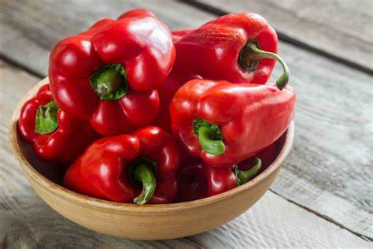

Productos De La Localidad de Chepén

ARROZ
El arroz es la semilla de la planta Oryza sativa o de Oryza glaberrima. Se trata de un cereal considerado alimento básico en muchas gastronomías del mundo. El arroz es el segundo cereal más producido en el mundo, por detrás del maíz y por delante del trigo. Debido a que el maíz es producido con otros muchos propósitos aparte del consumo humano, se puede decir que el arroz es el cereal más importante en la alimentación humana y que contribuye de forma muy efectiva al aporte calórico de la dieta humana actual; es fuente de una quinta parte de las calorías consumidas en el mundo. Desde 2008, se ha realizado un racionamiento en algunos países debido a la carestía de arroz.
El camote es un tubérculo que contiene agua, fibra, lípidos, proteínas, grasas, almidón, azúcares, vitaminas, minerales y aminoácidos1. Según información publicada en Food and Nutrition Information Center, 100 gramos de camote proporcionan2: Energía: 86 calorías. Agua: 77 gramos. Proteína: 1,6 gramos. Carbohidratos: 20,1 gramos. Azúcar: 4.2 gramos. El camote también es rico en vitamina A, B1, C, E y potasio
ESPARRAGO
Los espárragos son un alimento con un valor energético bajo y un alto contenido en agua12. Los nutrientes de los espárragos incluyen34512: Potasio, calcio, fósforo, magnesio, hierro, zinc y selenio, que son minerales importantes para el organismo. Vitamina A, C, E, K y del complejo B, especialmente ácido fólico, que son antioxidantes y contribuyen al buen funcionamiento del sistema inmunitario, nervioso y reproductivo. Fibra, que ayuda a regular el tránsito intestinal y a prevenir el estreñimiento. Proteína vegetal, que aporta aminoácidos esenciales para la formación de tejidos y enzimas. Ácido aspargínico, que tiene un efecto diurético y depurativo, favoreciendo la eliminación de líquidos y toxinas.
LIMON
Los limones son una excelente fuente de nutrientes. Contienen vitaminas C, B6, B9, A, E y B3, y minerales como potasio, calcio, fósforo, magnesio, sodio, yodo, selenio y zinc 1234. Además, los limones son ricos en fibra y antioxidantes 14. La vitamina C presente en los limones mejora las funciones inmunológicas, la salud de la piel y tejidos, como las encías. Además, es un potente antioxidante 1. El potasio ayuda a disminuir y regular la presión sanguínea y tiene efectos positivos en la salud cardiovascular 1. La fibra presente en los limones es la pectina, una fibra soluble que ayuda a disminuir los niveles de azúcar en la sangre, haciendo más lenta la digestión de los carbohidratos 1. El ácido cítrico ayuda a prevenir la formación de piedras en los riñones 1. La hesperidina presente en los limones fortalece los vasos sanguíneos y previene la aterosclerosis 1. La diosmina es un antioxidante utilizado en medicamentos para el sistema circulatorio. Mejora el tono vascular y reduce la inflamación crónica en los vasos sanguíneos 1. La eriocitrina es un antioxidante que se encuentra en la cáscara y jugo del limón 1. El D-limoneno es un aceite esencial que se encuentra en la cáscara del limón. Es el responsable del característico olor de los limones y ayuda a aliviar las agruras y el reflujo

Mangos
Los limones son una excelente fuente de nutrientes. Contienen vitaminas C, B6, B9, A, E y B3, y minerales como potasio, calcio, fósforo, magnesio, sodio, yodo, selenio y zinc 1234. Además, los limones son ricos en fibra y antioxidantes 14. La vitamina C presente en los limones mejora las funciones inmunológicas, la salud de la piel y tejidos, como las encías. Además, es un potente antioxidante 1. El potasio ayuda a disminuir y regular la presión sanguínea y tiene efectos positivos en la salud cardiovascular 1. La fibra presente en los limones es la pectina, una fibra soluble que ayuda a disminuir los niveles de azúcar en la sangre, haciendo más lenta la digestión de los carbohidratos 1. El ácido cítrico ayuda a prevenir la formación de piedras en los riñones 1. La hesperidina presente en los limones fortalece los vasos sanguíneos y previene la aterosclerosis 1. La diosmina es un antioxidante utilizado en medicamentos para el sistema circulatorio. Mejora el tono vascular y reduce la inflamación crónica en los vasos sanguíneos 1. La eriocitrina es un antioxidante que se encuentra en la cáscara y jugo del limón 1. El D-limoneno es un aceite esencial que se encuentra en la cáscara del limón. Es el responsable del característico olor de los limones y ayuda a aliviar las agruras y el reflujo
ZAPALLO
El zapallo es una hortaliza de origen americano que también es conocida con el nombre de auyama. Pertenece a la familia de las cucurbitáceas, dentro de las que nos encontramos con más de 850 especies (como el pepino o el calabacín), y en nuestro país se la conoce con el nombre de calabaza. El consumo del zapallo se remonta al tiempo de los aztecas, y años después fue introducida en Europa por los españoles después de las conquistas, siendo más conocido y aumentando su consumo. A día de hoy es habitual la preparación del puré de zapallo para bebés y niños pequeños, gracias a que aporta unos beneficios interesantes para sus delicados sistemas digestivos. El zapallo es una hortaliza de sabor dulce. Contiene una pulpa de color anaranjado, la cual es sumamente rica en betacarotenos (sustancias que, como de buen seguro sabrás, ayudan a prevenir el cáncer). Gracias a su alto contenido en fibra, el zapallo ayuda a regular la función intestinal, destacando además porque se digiere con muchísima facilidad, especialmente cuando se cocina hervido o al horno, actuando a su vez como suavizante. Por ello se recomienda su consumo en caso de acidez estomacal o gastritis (sobretodo en caso de gastritis nerviosa ), y en personas con estómago delicado. Ayuda también a depurar los riñones, siendo interesante su consumo no solo para regular su funcionamiento, sino también el correcto funcionamiento de la vejiga. Destaca también por su alto contenido en agua, de forma que se convierte en una hortaliza idean en dietas de adelgazamiento, gracias a posee pocas calorías e hidratos de carbono. Gracias asimismo a su contenido en vitaminas, el zapallo ayuda a cuidar la vista, y fortalecer la piel, el cabello y los huesos. Información nutricional del zapallo: Calorías: 28 kilocalorías. Proteínas: 1 gramo. Hidratos de carbono: 5.6 gramos. Grasas: 0.1 gramos. Fibra: 1.5 gramos 1.

PALTA
La palta, también conocida como aguacate, es una fruta originaria de Mesoamérica y es muy consumida en muchos países de Latinoamérica. Es rica en nutrientes y tiene importantes propiedades nutricionales 1. 100 gramos de palta aportan 1: Energía: 160 kcal. Hidratos de carbono: 8.53 g. Proteínas: 2 g. Grasas: 15 gramos de grasa, de los cuales 8,5 son grasas monoinsaturadas, además de grasas poliinsaturadas. Agua: 75 gramos. Vitaminas: destaca especialmente el aporte de vitamina A, B (B1, B2, B6), C, E y K. Además, la palta es útil para la belleza y reduce los niveles de colesterol malo en sangre y aumenta el colesterol bueno 2.

El pimiento es una hortaliza muy nutritiva y saludable. Contiene una gran cantidad de agua, lo que lo convierte en un alimento con muy bajo aporte calórico 12. A continuación se detallan los nutrientes que aporta el pimiento por cada 100 gramos 132: Energía: 19,3 kcal. Hidratos de carbono: 3,7 g. Proteínas: 0,9 g. Grasas: 0,3 g. Agua: 92 ml. Fibra: 1,4 g. Minerales: potasio (210 mg), fósforo (25 mg), magnesio (13,5 mg). Vitaminas: vitamina A (67,5 mcg), vitamina C (131 mg), vitamina E (0,8 mg). El pimiento es rico en vitamina C y vitamina B6, que son fundamentales para el sistema nervioso central y la parte cerebral 3. Además, contiene minerales y folatos, que son importantes para nuestras defensas 1.
PIMIENTO
El pimiento es una hortaliza muy nutritiva y saludable. Contiene una gran cantidad de agua, lo que lo convierte en un alimento con muy bajo aporte calórico 12. A continuación se detallan los nutrientes que aporta el pimiento por cada 100 gramos 132: Energía: 19,3 kcal. Hidratos de carbono: 3,7 g. Proteínas: 0,9 g. Grasas: 0,3 g. Agua: 92 ml. Fibra: 1,4 g. Minerales: potasio (210 mg), fósforo (25 mg), magnesio (13,5 mg). Vitaminas: vitamina A (67,5 mcg), vitamina C (131 mg), vitamina E (0,8 mg). El pimiento es rico en vitamina C y vitamina B6, que son fundamentales para el sistema nervioso central y la parte cerebral 3. Además, contiene minerales y folatos, que son importantes para nuestras defensas 1.
PLATANO
El plátano es una fruta tropical rica en nutrientes y muy consumida en muchos países de Latinoamérica. 100 gramos de plátano aportan 12: Energía: 89 kcal. Hidratos de carbono: 22.80 g. Proteínas: 1.09 g. Grasas: 0.33 g. Agua: 74.91 g. Vitaminas: destaca especialmente el aporte de vitamina B6, vitamina C y vitamina A. Minerales: potasio, magnesio, fósforo y hierro. El plátano es rico en fibra, lo que ayuda a regular el tránsito intestinal y a mantener una buena salud digestiva 1. Además, es una fruta muy versátil que se puede consumir de muchas formas diferentes, ya sea cruda, cocida, entera o triturada, y se utiliza en la preparación de platos tanto dulces como salados 3. Entre los beneficios del plátano para la salud, se encuentran: Regula el intestino: gracias a su alto contenido en fibra, el plátano ayuda a aliviar el estreñimiento y a regular el tránsito intestinal 3. Controla el peso: el plátano es rico en fibras que aumentan el tiempo de digestión de los alimentos, lo que lo convierte en una fruta ideal para controlar el peso 3. Previene los calambres musculares: el plátano es rico en potasio y magnesio, minerales importantes para la conducción eléctrica, contracción y recuperación muscular, por lo que es ideal para evitar los calambres musculares y mejorar el rendimiento físico 3. Reduce la presión arterial: el plátano es rico en magnesio y potasio, minerales que favorecen la relajación de los vasos sanguíneos, facilitando la circulación de la sangre, lo que ayuda a prevenir y reducir la presión arterial 3. Fortalece el sistema inmune: el plátano es rico en vitamina C, un potente antioxidante, y vitamina B6, una vitamina que favorece la formación de anticuerpos y de las células de defensa, lo que fortalece el sistema inmunológico y ayuda a combatir resfriados, estados gripales e infecciones 3.
<1>YUCA
La yuca es un tubérculo considerado un superalimento por su alto contenido en minerales como el hierro y el calcio, y su importante aporte proteico y vitamínico. Entre sus beneficios para la salud se encuentran la protección de los huesos, la suavización de dolencias como la artritis, el cuidado de las articulaciones, la facilidad de digestión y su uso externo para suavizar problemas en la dermis. Además, la yuca es un alimento ligero que ayuda a mantener la línea y puede ser consumido por celiacos. También contiene hierro, que ayuda a prevenir la presencia de anemia. La yuca es utilizada para enfermedades de la piel y el alivio de las jaquecas, y sirve para producir papel, textiles, cosméticos, detergentes y plástico biodegradable. La yuca contiene calcio, vitamina K y algunas vitaminas del complejo B, que son importantes para producir hormonas metabólicas y regular el metabolismo en el cuerpo 1.
La yuca es un tubérculo considerado un superalimento por su alto contenido en minerales como el hierro y el calcio, y su importante aporte proteico y vitamínico. Entre sus beneficios para la salud se encuentran la protección de los huesos, la suavización de dolencias como la artritis, el cuidado de las articulaciones, la facilidad de digestión y su uso externo para suavizar problemas en la dermis. Además, la yuca es un alimento ligero que ayuda a mantener la línea y puede ser consumido por celiacos. También contiene hierro, que ayuda a prevenir la presencia de anemia. La yuca es utilizada para enfermedades de la piel y el alivio de las jaquecas, y sirve para producir papel, textiles, cosméticos, detergentes y plástico biodegradable. La yuca contiene calcio, vitamina K y algunas vitaminas del complejo B, que son importantes para producir hormonas metabólicas y regular el metabolismo en el cuerpo 1.